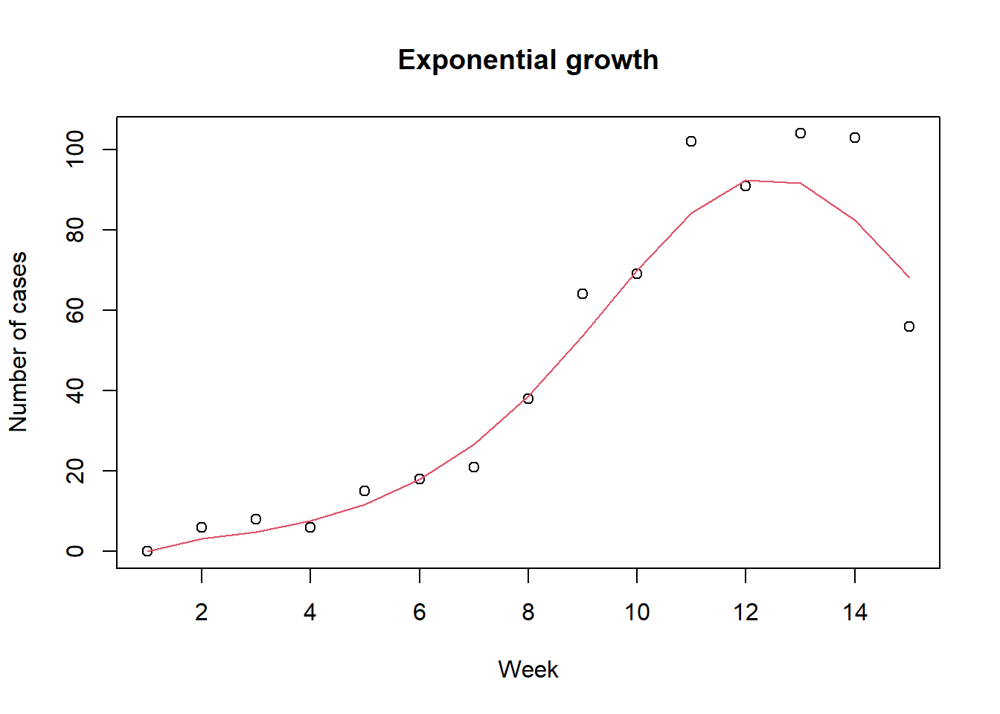
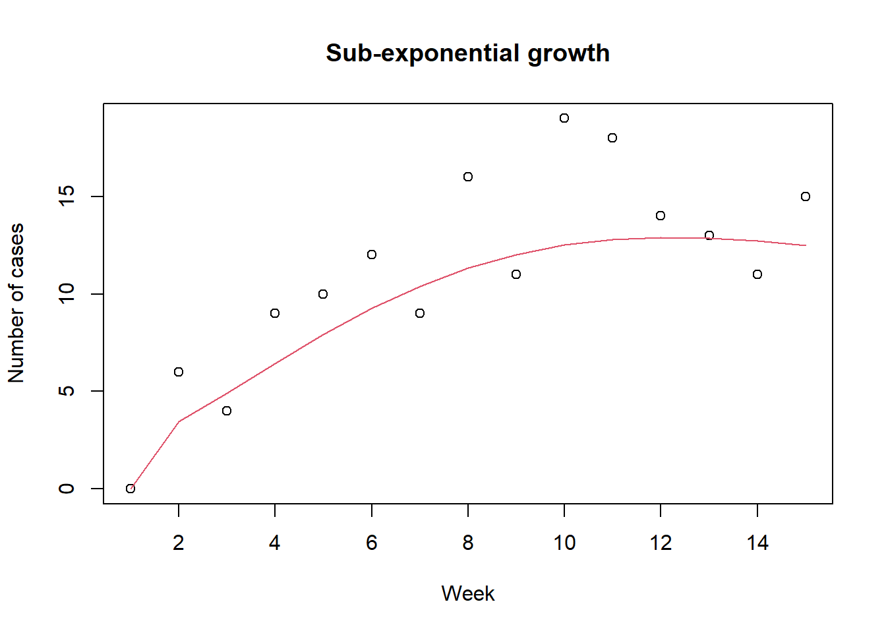
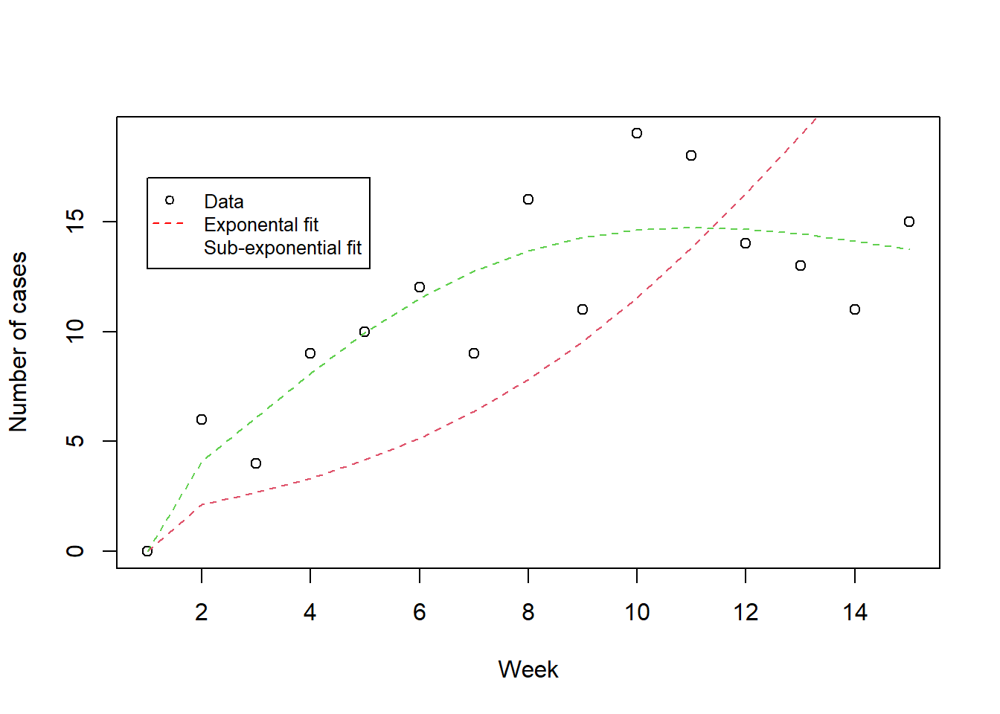

seir_ode <- function(t, y, params) {
# state variables
S <- y["S"];
E <- y["E"];
I <- y["I"];
R <- y["R"];
CI <- y["CI"]
epsilon <- params[["epsilon"]] # 1/epsilon = latent period
gamma <- params[["gamma"]] # 1/gamma = duration of infectiousness
beta <- params[["beta"]] # R0 = beta/gamma
alpha <- params[["alpha"]]
N <- S + E + I + R # total population size
muSE <- beta * S * (I^(alpha)) / N # rate from S to E
muEI <- epsilon * E # rate from E to I, i.e., 1/epsilon = latent period
muIR <- gamma * I # rate from I to R
dS <- - muSE # rate of change for S
dE <- muSE - muEI # rate of change for E
dI <- muEI - muIR # rate of change for I
dR <- muIR # rate of change for R
dCI <- muSE # rate of change for R
return(list(c(dS, dE, dI, dR, dCI))) # return as a list to use deSolve package
}Sub-exponential growth
news
code
analysis
대부분의 SIR 모형은 감염병 확산의 메커니즘을 아래와 같은 식으로 표현한다.
\[\frac{\mathrm{d}I}{\mathrm{d}t} = \beta S\frac{I}{N} - \gamma I.\]
말로 설명하자면 다음과 같다. 감수성자가 단위 시간 당 평균적으로 \(\beta\) 의 유효 접촉, 다시 말해 감염자와 만나면 감염이 일어나게 되는 접촉을 하게 된다. 무작위로 접촉을 하는 경우 감염자를 만날 확률은 \(\frac{I}{N}\) 와 같다. \(N\)은 총 인구 수를 의미한다. 이러한 감염병 확산 메커니즘을 frequency-dependent 하다고 말한다.
이와 같은 메커니즘의 결과 중 하나는 감염병의 확산 초기에 감염자의 수가 exponential growth (EG)를 보인다는 것이다. 하지만 Chowell et al. 이 지적한 것처럼 실제 감염병 유행 자료를 살펴 보면 감염자수의 증가 속도는 SIR 모형이 예측하는 것 보다는 느린 속도 sub-exponential growth (SEG) 가 흔히 나타난다. 기존의 연구들에서는 크게 두 가지의 메커니즘을 들어 SEG 를 설명한다. 첫째는 어떤 이유로든 감염병이 확산되고 있는 인구집단에서 inhomogeneous mixing이 일어나는 경우이다. 왜 inhomogeneous mixing이 SEG를 나타내는지 그리고 정량적으로 어떤 관계가 있는지는 다음에 살펴보자. 이번 포스트에서는 사람들이 골고루 섞이지 않음으로 인해 감염병의 발생이 특정 지역 및 집단에 국한 되어 전체적으로는 확산 속도가 느려진다는 정도로 이해해도 되겠다. 이렇게 inhomogeneous mixing 이 나타나는 경우는 집단 내에서 특히 접촉이 많은 소규모 집단이 있다거나 (네트워크 개념을 사용하자면 clustering) 혹은 공간적으로 더 위험한 지역과 덜 위험한 지역이 있다고 가정할 수도 있겠다. Inhomogeneous mixing이외 에도 감염병 확산에 대응하여 사람들이 위험 행동을 줄여나가면 확산 속도가 점차 감소하여 SEG가 나타날 수 있다.
SEG를 표현하는 간단한 방법 중 하나는 아래 식에서 처럼 \(\alpha\)와 같은 지수를 사용하는 것이다 .
\[\frac{\mathrm{d}I}{\mathrm{d}t} = \beta S\frac{I^\alpha}{N} - \gamma I.\]
이번 포스팅에서는 SEG을 SEIR 모형을 이용하여 구현하고 모수 추정 후 EG 모형과 비교해보고자 한다.
우선 아래와 같이 SEIR 모형을 구현한다.
초기 조건을 정의하자. 이 값들은 스크립트에서 global 변수로 사용할 것이다.
# initial conditions as global variables
I0 <- 10 # initially infected people
y0 <- c(S=10000 - I0, E=0, I=I0, R=0, CI=0) # initial values for state variables
tend <- 100 # simulation end time 50 days
times <- seq(0, tend, by=1) # daily output for 150 days기본 모수를 정의하는 함수와 단위 시간 당 발생자 수를 조사하는 함수를 정의하자. 이 것들은 나중에 모수 추정과정에서 사용될 것이다.
# baseline parameters
pinit <- function(beta=0.3, alpha=1) {
params <- list() # parameter input for the SIR model
params$epsilon <- 0.5
params$gamma <- 0.2
params$beta <- beta
params$alpha <- alpha
return(params)
}
library(dplyr)
library(deSolve)
# incidence over a given time interval, delta_t
incidence <- function(p, delta_t=7) {
parm = pinit()
parm$beta <- p[["beta"]]
if(length(p) > 1) {
parm$alpha <- p[["alpha"]]
}
ode(y=y0, times=times, func=seir_ode, parms=parm) %>%
as.data.frame() -> out
di = c(0, diff(out$CI))
return(di[seq(1, length(di), by=delta_t)])
}아래와 같이 모수 추정에 사용할 거짓 자료를 만들어 보자. 전에 사용하 듯이 관찰값은 모형 예측값을 모수로 가지는 푸아송 변수로 가정하자. 기본 값으로 한 주간에 감염자수를 자료로 사용한다. 그림에서 원들은 거짓 관찰값을 점선은 모형 예측값을 나타낸다. 검정색과 빨강색은 각각 EG와 SEG를 나타낸다.
# create fake data
set.seed(42) # for reproducibility
inc1 = incidence(p=pinit()) # baseline parameters, i.e., alpha=1
dat1 <- rpois(length(inc1), lambda=inc1)
plot(dat1, xlab="Week", ylab="Number of cases", main="Exponential growth")
lines(inc1, col=2)
inc2 = incidence(p=pinit(beta=0.5, alpha=0.8))
dat2 <- rpois(length(inc2), lambda=inc2)
plot(dat2, xlab="Week", ylab="Number of cases", main="Sub-exponential growth")
lines(inc2, col=2)
거짓 자료를 이용하여 모수 추정을 하여 보자. 모수 추정 함수를 정의 하기 전에 아래와 같이 간단한 함수들을 정의하자. \(\mathrm{expit}\)은 0과 1사이의 값만 정의되는 모수 (i.e., \(\alpha\)) 를 사용하기 위해서 정의 하였고 이를 다시 원래값으로 되 돌리는 데 사용할 \(\mathrm{logit}\)을 정의하였다. \(\mathrm{AIC}\) (Akaike information criterion)는 모형의 우수함 (quality)의 상대 비교를 위해 사용한다. AIC 는 사용된 모형이 실제 자료를 만들어낸 모형과 다름으로 인해 잃어버리게 되는 정보의 양을 나타내는 상대적인 값이다. \(\mathrm{AIC}\) 값이 작을 수록 정보를 덜 잃어버렸다는 뜻으로 더 우수한 모형을 나타낸다고 할 수 있다. \(\mathrm{AIC_c}\) 는 모수 추정 시 사용된 자료의 수가 적은 경우에 더 적합한 방법이다.
\[ \mathrm{logit}(p) := \mathrm{ln} (\frac{p}{1-p})\] \[\mathrm{expit}(x) := \frac{1}{1+\mathrm{exp}(-x)}\] \[\mathrm{AIC} := 2k - 2\mathrm{ln}(\hat{L})\] \[ \mathrm{AIC_c} := \mathrm{AIC} + \frac{2 k^2+2 k}{n-k-1}\]
expit <- function(x) {
1/(1+exp(-x))
}
logit <- function(x) {
log(x/(1-x))
}
aic = function(k, L){
2*k - 2*log(L)
}
aicc = function(k, L, n){
2*k - 2*log(L) + (2*k^2+2*k)/(n-k-1)
}모형 에측값과 관찰값과의 유사성을 측정하기 위해 likelihood 함수를 사용하자. 함수를 최소화 하는 optim의 기본 기능을 사용할 것이기 때문에 negative log likelihood를 정의한다. SEG 모형의 경우 \(\beta, \alpha\) 두 개의 함수를 추정하자.
negloglik <- function (p, y) {
if (length(p) == 1) x <- incidence(p=pinit(beta=exp(p[1])))
if (length(p) == 2) x <- incidence(p=pinit(beta=exp(p[1]), alpha=expit(p[2])))
nll <- - sum(dpois(y, lambda=x, log=T), na.rm=T)
return(nll)
}이번에는 이번 포스팅의 주제인 SEG 모형으로 만든 거짓자료를 EG 그리고 SEG 모형 두 가지로 최적화하여 보자.
fit2 = optim(par=log(0.3), fn=negloglik, y=dat2, method="Brent", lower=log(1e-6), upper=log(0.9))
fit3 = optim(par=c(log(0.3), logit(0.2)), fn=negloglik, y=dat2, method="Nelder-Mead")
# check log likelihood
-fit2$value[1] -54.8522-fit3$value[1] -33.3477plot(dat2, xlab="Week", ylab="Number of cases")
lines(incidence(p=pinit(beta=exp(fit2$par[1]))), col=2, lty=2)
lines(incidence(p=pinit(beta=exp(fit3$par[1]), alpha=expit(fit3$par[2]))), col=3, lty=2)
legend(1, 17, legend=c("Data", "Exponental fit", "Sub-exponential fit"),
col=c("black", "red", "green"), lty=c(NA,2.2), pch=c(1,NA,NA), cex=0.8)
플롯을 살펴보았을때 SEG 모형을 이용한 피팅이 더 잘 맞아들어가는 것 같은데 \(\mathrm{AIC}\)를 이용해서 모형을 비교해보자. \(\mathrm{AIC}\) 와 \(\mathrm{AIC_c}\) 둘 다 SEG 모형이 자료를 더 잘 설명하는 모형임을 보여준다.
# Akaike information criterion to compare models
aic(k=1, L=exp(-fit2$value)) [1] 111.7044aic(k=2, L=exp(-fit3$value)) [1] 70.6954aicc(k=1, L=exp(-fit2$value), n=length(dat2))[1] 112.0121aicc(k=2, L=exp(-fit3$value), n=length(dat2))[1] 71.6954